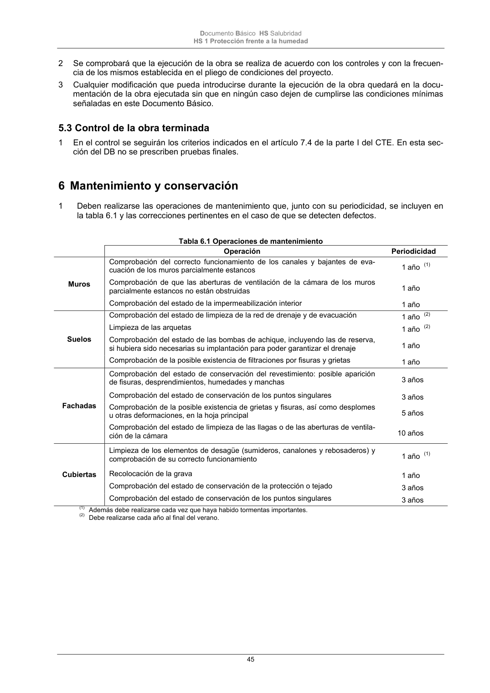

DB-HS Salubridad · edición 2022-06-14 · capa oficial
Documento DB-HS-oficial · SHA-256 del PDF 68df3caacc95f71aee2ec1ba7b2c65ae66155c21e3a8785521b8fdd4fd640d3b
Copia fiel del PDF fuente · Fuente oficial
Ficha de la disposición en la fuente oficial
Formatos: JSON del segmento · Markdown
6 Mantenimiento y conservación 1 Deben realizarse las operaciones de mantenimiento que, junto con su periodicidad, se incluyen en la tabla 6.1 y las correcciones pertinentes en el caso de que se detecten defectos. Tabla 6.1 Operaciones de mantenimiento Operación Periodicidad Muros Comprobación del correcto funcionamiento de los canales y bajantes de eva- cuación de los muros parcialmente estancos 1 año (1) Comprobación de que las aberturas de ventilación de la cámara de los muros parcialmente estancos no están obstruidas 1 año Comprobación del estado de la impermeabilización interior 1 año Suelos Comprobación del estado de limpieza de la red de drenaje y de evacuación 1 año (2) Limpieza de las arquetas 1 año (2) Comprobación del estado de las bombas de achique, incluyendo las de reserva, si hubiera sido necesarias su implantación para poder garantizar el drenaje 1 año Comprobación de la posible existencia de filtraciones por fisuras y grietas 1 año Fachadas Comprobación del estado de conservación del revestimiento: posible aparición de fisuras, desprendimientos, humedades y manchas 3 años Comprobación del estado de conservación de los puntos singulares 3 años Comprobación de la posible existencia de grietas y fisuras, así como desplomes u otras deformaciones, en la hoja principal 5 años Comprobación del estado de limpieza de las llagas o de las aberturas de ventila- ción de la cámara 10 años Cubiertas Limpieza de los elementos de desagüe (sumideros, canalones y rebosaderos) y comprobación de su correcto funcionamiento 1 año (1) Recolocación de la grava 1 año Comprobación del estado de conservación de la protección o tejado 3 años Comprobación del estado de conservación de los puntos singulares 3 años (1) Además debe realizarse cada vez que haya habido tormentas importantes. (2) Debe realizarse cada año al final del verano. Documento Básico HS Salubridad HS 1 Protección frente a la humedad 46
